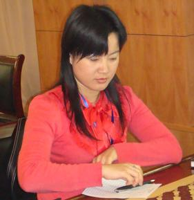
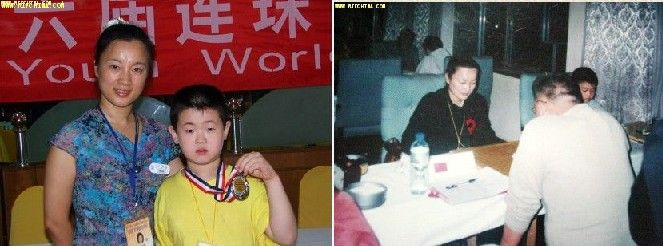
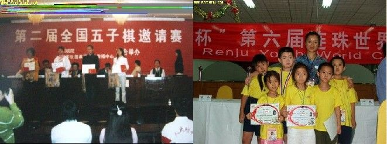
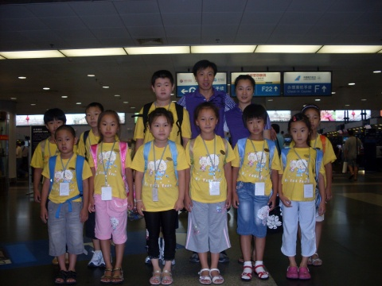

少儿五子棋优秀教练介绍——杨春艳
#1 少儿五子棋优秀教练介绍——杨春艳 作者：黄药师 发表时间：2010-6-15 20:23:28




河北“快乐连珠”创办人，成立了少儿五子棋培训学校。多次带少儿组参加全国地区五子棋比赛。努力推动组织秦皇岛的五子棋活动，特别是在儿童棋手的培养中卓有成效，秦皇岛快乐连珠俱乐部成立于2003年12月30日，是我国首家取得合法手续并报请中国棋院备案的五子棋职业俱乐部。成立至今在所参加的全国性五子棋比赛中全部载誉而归，共获得个人冠军4个、团体冠军2个、个人亚军3个、季军3个并在2006年连珠世青赛上摘得一块银牌。
［此帖子已被 黄药师 在 2010-6-15 20:42:22 编辑过］